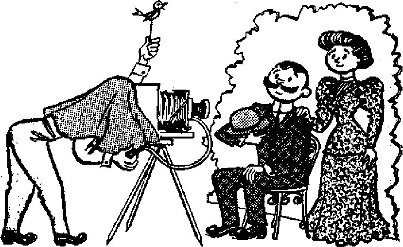

CHRISTIAN ONLY IN NAME
The Voters Vindicate Judge Parrish
A Letter from Paris
"The Fool Hath Said"
THE MISSION OF THIS JOURNAL
News sources that are able to keep you awake to The vital issues of our times must be unfettered by censorship and selfish interests. ‘Awake 1” has no fetters. It recognizes facts, faces facts, is free to publish facts. It is not bound by political ambitions or obligations; it is unhampered by advertisers whose toes must not be trodden on; it is unprejudiced by traditional creeds. This journal keeps itself free that it may speak freely to you. But it does not abuse its freedom. It maintains integrity to truth.
“Awake uses The regular news channels, but is not dependent on them. Its own correspondents are on all continents, in scores of nations. From the four comers of the earth their uncensored, on-the'Scenes reports come to you through these columns. This journal’s viewpoint is not narrow, but Is international. It is read in many nations, in many languages, by persons of all ages. Through its pages many fields of knowledge pass in review—government, commerce, religion, history, geography, science, social conditions, natural wonders—why, its coverage is as broad as the earth and as high as the heavens.
“Awake!” pledges itself to righteous principles, to exposing hidden foes and subtle dangers, to championing freedom for all, io comforting mourners and strengthening those disheartened by the failures of a delinquent world, reflecting sure hope for the establishment of a righteous New World.
Get acquainted with “Awake!” Keep awake by reading "Awake I”
Published Semimonthly By watchtower bible and tract society, inc.
117 Adama Street
N. H. Knorr, President
Printing thi« indue: 1,325,000
Language in which the magazine h published: Semi-monthly—Afrikaans, Finnish, French,
German, Yiddish, Norwegian, Spanish, Swedish, Monthly—Danish, Greek, Portuguese, Ukrainian.
Offices Yearly subscription Rate
Am erica. U.S., 117 Adems St, Brooklyn 1, N.Y. SI Australia. 11 11 Beresford Rd., Strithfield, N.S.W. Sa Canada, 40 Irvin Awe., Toronto 5, Ontario SI England, 34 Craven Terrace, London, W. 2 "t South Africa, Private Bag, P.O. Elandsfontein,
Transvaal 7s
Entered « maud-class matter at Brooklyn, N. Y
Brooklyn 1, N. Y„ U. 8. A.
Grant Suiter, Secretary
Five cents a copy
Remittances should be sent tn office In your country in compliance in nee with regulations to guarantee a safe delivery of money. Remittances are accept at Brooklyn from countries where tiu office is located, by international money order only. Subscription rates In different countries are here slated in local currency. Notice at expiration (with renewal blank 1 is sent at least two issues before subscription eii. pires. Change of address when sent to our office may be expected effective within one month. Send your old as well as new address.
Act of March 3, 1870. Printed in U. S. A
CONTENTS
The Voters Vindicate Judge Parrish
The Marvelous Little Black Box
Aristippus, Ancient Apostle of Pleasure 21 What to Call a Nameless Mouse
“Your Word Is Truth”
Jehovah's Witnesses Preach in All
Volume XXXVI
Brooklyn, N. Y., May 8, 1955
Number 9
4
EXACTLY ten years ago, May 7, 1945, World War H in Europe ended, V-E Day came, the postwar era arrived and the peace for which the world had fought, bled and died was expected to enter.
Further, the “Four Freedoms” were a widely heralded goal. United States President Roosevelt stated them like this: “The first is freedom of speech and expression —everywhere in the world. The second is freedom of every person to worship God in his own way—everywhere in the world. The third is freedom from want... everywhere in the world. The fourth is freedom from fear—which, translated into world terms, means a world-wide reduction of armaments to such a point and in such a thorough fashion that no nation will be in a position to commit an act of aggression against any neighbor—anywhere in the world.”
A decade now has passed. Do ail men have the freedom of speech, expression, worship and the freedom from want and fear that the victory over tryanny was to bring? Who would dare say so?
The tenth anniversary of World War ITs end finds both sides of the present East-West struggle heartily preparing for battle. Russia, Britain and America have atomic weapons. Intercontinental rockets are planned for the near future. Nazism’s defeat did not bring freedom from fear, but fear has multiplied many times with dreaded atomic bombs now being produced.
Not only is there fear of worse destruction to come, but during this decade itself there have been numerous wars. There have been revolts in Latin America: in Paraguay, Colombia, Costa Rica, Bolivia, Peru and elsewhere. The Indonesians won their freedom from the Dutch, then fought rebel groups that opposed the new government There was guerrilla warfare in Greece, the Arabs fought with the Israelis, and India and Pakistan fought over Kash-mir. Years have been spent in fighting the Karen rebels in Burma, the Hukbalahaps in the Philippines and other groups elsewhere. In Kenya alone 8,000 of the Mau Mau have been killed since October, 1952. True, these wars were of varying sizes, but no war, not even a single battle, is “small” to those who die in it.
War is horribly real to those who fear sudden death or maimed bodies and to those whose families have been broken and whose land and homes have been destroyed. Britain’s hard-hitting Sir Gerald Templer said in Malaya in 1952: “I don’t like this world.... The whole world has gone mad.”
Further, the decade since 1945 has witnessed three major Communist wars in Asia. In October of that year China’s troops locked powder horns with the Chinese Communists and the Communists pushed the Nationalists into the sea, where they took refuge on the island of Formosa behind the frowning guns of the United States seventh fleet.
The second Asian war began when on December 19, 1946, Vietminh forces attacked the French in Hanoi, contesting French colonial rule in Indochina. Lasting seven and a half years (longer than World War II) this most exasperating of wars took a total of nearly 300,000 lives*
Meanwhile, J3ommunist China had overrun Tibet, and on June 25,1950, the North Korean Communists had invaded South Korea. The United States, the United Nations and Communist China were involved, and this nightmarish three-year struggle proved to be the fourth-bloodiest war in United States history*
Then, too, the countries of Poland, Czechoslovakia, Romania, Hungary and Austria were liberated from the shackles of Nazism, only to grovel now in the shackles of communism. East German adolescents of the Nazi youth movement became leaders in the Communist youth movements. One totalitarian foe was defeated, another sprang up. One oppressive ruler is conquered, another replaces him. It has been so throughout history.
Why? Because, as the Bible shows, Satan is this world’s god. Many persons scoff at that idea. While suffering under his heel they say he does not exist. But Christ Jesus was not that foolish, and neither are true Christians today. Though the world has ignored them, the Scriptures are clear in showing that Satan would do his worst when he realized that his time to rule was expiring—and that is just what he is doing today. However, many honest persons are taking heart. They are putting confidence in Christ’s kingdom, which alone has strength beyond challenge and which will end Satan’s wicked rule forever. They rejoice to learn that these present conditions were foretold in the Bible as being a sign of Christ’s rule beginning, and that, therefore, we are living in the day when, as Psalm 46:6-11 predicted, God, not man, will destroy the weapons and make wars to cease throughout the earth.
This magazine awakened many persons to these facts a decade ago when false predictions were then being made, and it continues to speak out boldly^while other false predictions are being made today. Study the facts, see that they are true and that they will enable you to take the right course.
able, because only willing believers were' admitted to the Christian fold by water baptism. These sheeplike ones were to be treated with all tenderness and compassion. In love the Christian congregation was to
THE mission of Christianity in the earth was to be a patient, peaceful, Godfearing endeavor. Converts were to be won by love of truth, argument, reason and logic. Forced conversions were unacceptgrow. “By this all will know that you are my disciples, if you have love among yourselves.”—John 13:35, New World Trans.
Even opposers were to be treated with the same kindness and consideration that
marked the Christian congregation. “Continue to love your enemies, to do good to those hating you, to bless those cursing you, to pray for those who do you injury. To him that strikes you on the one cheek offer the other also, '...Also just as you want .men to do to you, do the same way to
says: The Christians "held their meetings /'in private dwellings; their ministers wore no peculiar dress; and, by all who sought merely the gratification of the eye or of the ear, the simple service in which they engaged must have been considered very.,.
''bald and uninteresting.” Y<Y'Yy-$'--.
them. ... Continue be- , g. .<■
coming compassionate, ; :. .. fiirytherewas a change.,
■ '"■■■■' ■ just as your Father' is’-'--’ '■ V£W.<.a -. Persecution • swept
compassionate. Force-: lh(,. . -Christian congregation.
; .. and violence were to be ' Pure worship- w<lostm
unheard of among them,.. - . • ■ •' ■ ... sight of and a great majority
They were told: “Do not .-. jority of professing
Christians gradually fell away to the subtleties of pagan religion. They began to emulate the magnificence of the heathen temples, and even to: ape their arrangements. Pagan doctrines and fables began to be mixed with the pure doctrine of the truth. By A.D. 325 the 1,800 so-called “Christian” communities were organized
? resist him that is wicked.” “Return your
sword to its .place, for all those who take the sword will perish by the sword.” Therefore wars and barbarisms were outlawed. —Luke 6:27-36; Matthew 5:39; 26:52, New World Trans. . .- / .". ■ ■ /
: Through the patient and loving missidn-
ary work of the early disciples of Christ,
X the majority: of whom, are hot mentioned under the control of a loose government of in history, the gospel became known among bishops, presbyters and deacons, Further,, the nations. As early as the second cen- by this time organized apostasy became : tury the good news reached far into Asia, sufficiently strong to warrant the Roman Africa, Europe, Spain, and even into the government to consider its fusion with the : far-flung fields of the British Isles. The . existing Roman state cult. : : ; ;
willingness with which Christian-men re-
A HybridReligion Resulted ;
Roman emperor Constantine brought about a fusion religion by compromise. So thorough was his job that by the end of
sponded to the command to go “and make disciples of people: of all the. nations’’ is one of. the most.remarkable facts in Chris-.
tian history.—-Matthew 28:19, 20,..A76w
World Trans. ' ■ '' / ■
the fourth century the original apostolic >
.. . ... . . ... :• church organization seemed smothered.
X Christianity, however,, was an exceed- people called themselves ^Christians,” not .|. . . jngly strange religion to the pagans. The because, they were Christian, but because f ^^peathens worshiped in marble temples. At. was .the fashion and favor of the day,
. Their priests were arrayed in gaudy robe^./';-“None objected to.these Christians. faithfully — •-•-T: jng the opinions of their pagan ancestors respecting the soul, heroes, demons, tem- /. pies and the like, and their transferring.? them into their devotions; as no one proposed utterly to abolish the ancient pagan institution but only to alter them some- ’ . . ists. In his book The Ancient Church Killen, what and purify them, it was unavoidable
'v'^The temple incense and music and lustral
water were all arranged to fascinate the senses. Christianity, on the other hand, presented none of these attractions. Christians had no altars, temples, or sacrifices. For this, reason pagans called them athe-
MAY S, 1955 ' " ■ ■ . \ ■ . '■ 5
that the religion and the worship of Christians should in this way become corrupted.’*—Mosheim’s Ecclesiastical History, page 191.
Fusion religion became universal—catholic. But to call it “Christian” is a misnomer, as facts of history will establish. The popes of Rome embraced every opportunity to send forth missionaries attached to their cause. But these missionaries were a far cry from the patient, peace-loving disciples of our Lord Jesus Christ. These Roman missionaries were rude, corrupt and cruel Where reason failed, the sword was used. Bloody battles were fought. And many were the instances in which baptism was administered at the point of the sword.
Rapt ism by Sword
By the fifth century Christianity was looked upon by barbaric nations as a militant organization, Socrates, fifth-century church historian, says that the Burgundians embraced the Roman brand of “Christianity” because they’believed the Roman god would defend them against the rapines and incursions of the Huns. Religion to the Burgundians was as excellent as the success of its army. The Roman army being great, they assumed that its religion and god were too.
It was this same principle and viewpoint of military greatness that engaged Clovis, king of the Salii, a nation of the Franks, to embrace Roman Catholicism. The learned Mosheim in his Ecclesiastical History says: “One must be a very inattentive and superficial observer of things, who does not perceive that the fear of punishment, the prospect of honors and advantages, and the desire of obtaining succour against his enemies from the countenance of the Christians, or the miraculous influence of his religion, were the prevailing motives that induced the greatest part to renounce the service of their impotent gods.”
In the sixth century Christendom began to grow in numbers in the East. Among the nations that embraced her concoction called “Christianity” were the Abasgi, the Heruli, also the Alans, Lazi and Zani. “These conversions, indeed, however pompously they may sound,” says Mosheim, “were extremely superficial and imperfect.”
During this century a great number of Jews were forced by the sword to embrace the growing papal empire. “In Gaul the Jews were compelled by Childeric to receive the ordinance of baptism; and the same despotic mode of conversion was practised in Spain.” Also in the seventh century they were barbarously compelled in many places to make an outward and feigned profession of their faith in Christ. Emperor Heraclius persecuted them in a most cruel manner, and ordered multitudes of them to be inhumanly dragged into Roman Catholic churches, in order to be baptized by violence and compulsion. This is how Christendom received her great numbers.
The eighth century marked an even greater growth of the pseudo-Christian Catholic empire. Zealous bishop Boniface, distinguished by the title of the Apostle of the Germans, did not use those methods with which Christ’s apostles made known the good news. Historian Mosheim states that Boniface “often employed violence and terror, and sometimes artifice and fraud, in order to multiply the number of Christians.”
Charlemagne's Barbarisms
Also in this century the sainted Charlemagne turned his hideous “Christian” army against the Saxons. In one day he had 4,500 of them beheaded as a lesson to the others who would not submit to baptism, Refusal to be baptized was punishable with death. It is easy to imagine what sort of Christians the Saxons must have been, who were dragooned into the Roman Catholic Church in this abominable manner. Yet the pope canonized Charlemagne’s memory and turned this gory murderer into an eminent saint
The Normans and other barbarous nations, which gave way to forced baptisms, revolted at the idea of giving up their worship of their ancestors. What took place, says Mosheim, was that these savage people ‘'persuaded the Christians among whom they lived to imitate their extravagant superstition in this respect; and this was the true and original source of the barbarous institutions that prevailed among the Latins” during the ninth and the tenth century. This, however, was in keeping with pope Gregory’s own rule, which has always been followed by the Roman Catholic Church. "For he who endeavors to ascend to the highest places rises by degrees or steps, and not by leaps.” This rule, as Schaff says, facilitated conversion, but it swept much paganism into the church.
The fear of punishment and the hope of reward had laid the foundation of Roman Catholicism in Poland and Russia. Fraud and deceit played an important part in converting the Cimbrians and the Danes. A bloody war harassed the Prussians into the Catholic fold. Waldemar I, king of Denmark, fought against the Slavonians, Venedi, Vandals, and others, and by the despotic voice of power forced them to be baptized into the church. Finlanders and Livonians were coerced by force to embrace the religion of their "Christian” conquerors, which the greatest of them did, though with the utmost reluctance. Catholic bishop Berthold of Livonia marched into the province at the head of a powerful army, "preached the Gospel sword in hand, and proved its truth by blows instead of arguments.”
These “booted apostles,” bloodstained sword-bearers of papal Rome, cruelly oppressed, slaughtered and tormented people less barbarous than they in the name of Christianity. The warlike people professed, with an inward reluctance, a religion which was inculcated by violence and bloodshed, which recalled to their remembrance nothing but scenes of desolation and misery, and which, indeed, was byt a few degrees, if any, removed from the absurdities of paganism.
Fall of Mongrel Religion
Thus arose the great structure known today as Christendom, and especially so Roman Catholicism, which is a facsimile of ancient Roman paganism, “the ghost of the deceased Roman empire, sitting crowned upon the grave thereof.” This explains the tenacious hold of superstition and the multitude of pagan and semipagan observances in the Roman Catholic religion. It explains the lack of knowledge ofc true Christian principles and of the Bible among the priests and parishioners alikef
However, true Christianity, like the spirit of God, is indestructible and unconquerable. Today, it makes itself felt in the lives of hundreds of thousands of ministers throughout the world who are engaged in the Christian work of declaring "this good news of the kingdom” for the purpose of a witness to all the nations before the accomplished end of this system of things. These have sheathed the sword and have made the Word of God a force in their lives. With loving-kindness and tender affection they appeal to people of good will. Their labors are voluntary and their work is one of love—love for God and Christ and love for neighbor. Among them the Bible is known and its principles are a reality. Their worship is that of Christ and his apostles. Their boast is not in armies or men but in God.
THE VOTERS VINDICA TE
JUDGE PARRISH
HON. Myles F. Parrish Leads Entire JlI Democratic County Ticket to Victory in General Election, Wins Second Tenure of Office by Immense Majority.” Thus the Adams County Observer of November, 1954, headlined its front-page report on the election of Judge Parrish to a second six-year term as judge of the Adams circuit court, and followed up with this opening paragraph: “Hon. Myles F. Parrish, incumbent judge of the twenty-sixth judicial circuit of the state of Indiana, comprising Adams County, led the entire Democratic ticket of county officials to a decisive victory at the general election just passed into history. His vote was 5,817, a total of 5,081 ahead of his opponent, who received only 736 votes,”
This avalanche of Votes that buried the opposition and kept Judge Parrish in office is worth noting by all who value a judiciary that withstands the trend to abdicate principle on the insufficient grounds of expediency. In his previous term Judge Parrish was confronted with a case loaded with political dynamite, a case with undercurrents of religious prejudice and public clamor and political pressure that would suck under a weak judge more interested in votes than in justice. When Judge Parrish rendered his decision he showed that he recognized the dangers lurking in the background, for he brought them to the fore and repudiated them as unworthy of consideration by a judge obligated to put administering justice ahead of advancing personal ambitions. Near the beginning of his opinion he laid down these governing principles:
“In the first place; the court must eradicate any taint of prejudice, either for or against any religious minority that may or may not exist. In the second place, the court must be conscientious, studious, impartial and just. In the third place, the court must be fearless of public clamor, regardless of public praise, and indifferent to private political or partisan influence. In the fourth place, the court must, to the best of his ability, administer justice according to law. And, finally, a judge should not administer his office for the purpose of advancing his personal ambitions or increasing his popularity.”
The case involved Jehovah’s witnesses. .The congregation in Decatur, Indiana, purchased property on which to build a Kingdom Hall, as the meeting places of Jehovah’s witnesses are called. But the application for a building permit was rejected by the superintendent of zoning and sanitation, and likewise denied by the board of zoning appeals. So the only recourse of the congregation was to take the matter to court, and in the fall of 1952 the case was heard by Judge Parrish of the Adams circuit court.
In court two grounds for denial were advanced by the board. The city ordinance required that the building be set back
eighteen feet from the front, whereas the plans allowed for fourteen feet set-back. However, at the time of the hearing before the board the witnesses had agreed to comply with the eighteen-foot set-back. The other reason for denial advanced by the board was that the plans did not provide for the amount of off-street parking space required by the city ordinance. However, provision was made for adequate parking space for the expected attendance.
In view of the fact that the congregation was willing to comply with the set-back requirement, and was using for parking what space was available, which was sufficient to accommodate the expected attendance at that time, the board should have been satisfied. The fact that it was not suggests other reasons were behind the denial of a building permit At the hearing before the board neighbors protested the building of a hall by Jehovah's witnesses. Between the neighbors and the board excuses for denial ranged from picayunish quibbling to religious prejudice. The hall, thougn no bigger than many homes, would cut off air and light. It would reduce property values. It would cause traffic congestion. And Jehovah’s witnesses did not salute the flag. With the advancement of this last reason the true cause for opposition stood revealed. There was religious prejudice against the Scriptural beliefs of Jehovah’s witnesses. But the board, with legal counsel, was wise enough not to rest its refusal on dislike of doctrine. So the two grounds before mentioned were thought more tenable to throw into the legal arena, even though the witnesses were willing to comply fully with one of them and had already complied substantially with the other one.
The Kingdom Hall in Decatur, Indiana
Arbitrary, Capricious, Unconstitutional
These facts supported the contention in court by Hayden C. Covington, attorney for the witnesses, that the denial was arbitrary and capricious, without basis in fact and law. And it finds further support when it becomes known that there are five other churches in the neighborhood, that none of them provide any off-street parking space, and that one of these was built after the present zoning ordinances went into effect. If one church can get a permit to build without providing for any off-street parking, why is a permit refused Jehovah’s witnesses even when they do provide sufficient parking space for the cars of those expected to attend? If the small congregation of Jehovah’s witnesses would cause a traffic hazard even with their off-street parking, how is it that the other churches cause none when they fail to provide any off-street parking facilities whatsoever? Furthermore, the time of the meetings by Jehovah’s witnesses is when traffic is at low ebb. It is also true that practically all the public buildings constructed since these zoning ordinances became effective have been permitted under the law, and that without making any more of a compliance with the parking requirement than have Jehovah’s witnesses. Does not this prove that the board’s denial of a building permit to Jehovah’s witnesses was arbitrary and capricious?
And by the arbitrary and capricious denial of the building permit, legal counsel for Jehovah’s witnesses argued, the board had violated the guarantees of freedom of assembly and worship contained in both the state and the federal constitution. Counsel did not contend that the ordinance is unconstitutional, but that it is when it is construed, applied and enforced as it was against Jehovah’s witnesses. As construed and applied, the board has power to discriminate against a religion and deny it the right to build and operate a church building, and the delegation of such power is unconstitutional. The most orthodox form of preaching today is for a congregation to assemble in a building for worship. To deny a congregation the right to build a hall is to deny it the right to assemble and worship in this orthodox way and clashes with constitutional guarantees.
Constitutional liberties cannot thus be abridged by forcing a church to operate a parking lot before it can function. To require it burdens the congregation, and where space is limited, as is usually the case, it not only burdens but, under the guise of regulation, prohibits the use of the property for church purposes. Real estate is necessary for the exercise of freedom of worship in a church or hall, and without it there can be no freedom to worship in a permanent location. This freedom cannot be nullified by requiring the church to lay out a parking lot bigger than ground space allows; in fact, a church cannot be rightfully required to provide off-street parking at all. Even if traffic hazards are created by the presence of a church, the remedy is not to deny the constitutional guarantee of freedom of worship. The remedy would be for the city to post the street with appropriate signs, calling for greater driving caution on the part of motorists, or even the stationing of a policeman there at the necessary time to control traffic.
And for a city to burden one congregation with running a large parking lot while letting five others in the same neighborhood function without any parking provisions is unlawful discrimination and voids an ordinance that is enforced in that discriminatory way. The discrimination renders it unconstitutional. It denies constitutional rights, contrary to the due-process and equal-protection clauses of the Fourteenth Amendment to the Constitution of the United States.
Two Decisions
Other points were brought out at the trial, but the foregoing is the essence of the issues at stake. In November, 1952, Judge Parrish handed down his opinion. The stir that the case had made in local political circles is shown by the fact that the members of the board of zoning appeals and of the city council were in court to hear the opinion. They did not like what they heard. Sensing that religious prejudice was behind the board’s denial, Judge Parrish quoted from the Indiana Law Journal in his opinion: “The function of the court in protecting religious liberty is to check and rebuke overzealous local officials who have sought to cloak religious persecution in respectable clothing in order to crush the religious minorities of whose doctrines the majority of the community do not approve.”
The closing paragraphs of his decision did “check and rebuke the overzealous local officials”:
“The Court, therefore, finds that the petitioners herein, the Jehovah’s Witnesses, have substantially complied with the zoning ordinance, in that they have off-street parking for a number of their members.
“The Court further finds that the actions of said board in denying the issuance of a permit to the Jehovah’s Witnesses is arbitrary, in that the application of the ordinance requiring that all places of assembly, and in particular, churches, have space for off-street parking, as a condition precedent to construction of a building, does not have any relation to the public health, morals, safety or welfare when applied to the church.
“The Court further finds that the denial of a permit to the petitioners, the Jehovah’s Witnesses, to build a church on the ground that the frontage does not comply with the zoning ordinance, in that the church is to be built fourteen and one-half feet from the front of the lot, instead of eighteen and one-half feet as found by the city engineer, upon the authorities heretofore cited, is arbitrary, and unreasonable, and that the petitioners herein have substantially complied with the ordinance in question,
“The Court further finds that although the zoning ordinance may be valid and constitutional, yet the ordinance as applied to the petitioners in refusing to permit the petitioners to erect a church in the residential district of the city of Decatur, where there has been no adequate showing that this exclusion of the church was in the furtherance of the public health, safety, morals, or the public welfare, was arbitrary and unreasonable, and in violation of the petitioner’s rights under the State and Federal Constitutions.
“It is therefore, now ordered, adjudged and decreed by the Court that the finding and the decision of the Board of Zoning Appeals is hereby reversed.”
The board appealed the case to the Supreme Court of Indiana, and there the case was vigorously argued for Jehovah’s witnesses by their legal counsel, Hayden Covington. Interruptions from the bench were frequent and spirited. The five judges were obviously divided in their opinion. Present again here, as in Judge Parrish's court, was the entire city council of Decatur, to listen to the argument and to exert what political pressure they could on the judges. Also present was Judge Parrish, a very unusual thing but one that showed his interest in the outcome of the case. The argument before the state supreme court was in October, 1953, and on February 1, 1954, the court handed down its decision upholding the findings of Judge Parrish, with the exception that the witnesses should have an eighteen-foot set-back, a point they were willing to comply with all along. The court was divided, Associate Judge Bobbitt writing the majority opinion with which Chief Justice Draper and Associate Judge Gilkison concurred, and Associate Judge Emmert writing a dissent in which Associate Judge Flanagan joined.
The majority decision found the claim that street parking by the congregation would create a traffic hazard to be unsound. But even if it did cause a traffic problem the remedy should be “by traffic police, signs and other reasonable regulations imposed alike upon all persons using the streets in the vicinity of churches, without undue interference with the right of worship and free assembly.” It also decided: “Under the set of facts in this particular case the application of this provision of the ordinance to appellee’s property would not only prohibit the building of the proposed church, but would also restrict the right of freedom of worship and assembly to an extent that out-weighs any benefit to the safety, health and general welfare of the public, and in such a situation the police power must yield to the constitutional right of freedom of worship and assembly.”
An important factor of this decision is that it establishes that a zoning law that requires off-street parking facilities is, when enforced, an abridgment of the constitutional guarantees of freedom of worship and assembly. This is an outstanding holding laid down by Judge Parrish and in
which he was sustained by the Indiana supreme court.
Judge Parrish showed great courage in ruling in favor of an unpopular religious minority. There is prejudice against the witnesses, there was some public clamor against them, and some political pressure was upon Judge Parrish. Politicians threatened to run a lawyer against him and beat him at the next election. But he held firm to the principles he outlined in his opinion, and the voters vindicated him, showed they valued his judicial integrity. They returned him to office in a landslide victory for him at the polls. He received more votes than any other candidate on any ticket, running far ahead of even those candidates who were unopposed. He carried every precinct in Adams county, and in the precinct where the Decatur congregation of Jehovah’s witnesses is now located, because of his courageous decision, he received 244 votes and his opponent got only ten. This shows that prejudice against the witnesses is not general in Adams county, that the “public clamor” is just the loud noise made by a few and which is out of all proportion to their number, and that the political pressure never developed any steam.
Judges must be beyond influence by those who would curry favor or mouth threats to get decisions bent in their direction. The Bible recognizes the need for judges to hold aloof from corrupting practices or considerations, and pointedly adjures them: “You should set judges and officers for yourself inside all your gates that Jehovah your God is giving you by your tribes, and they must judge the people with righteous judgment. You must not pervert judgment. You must not be partial or accept a bribe, for the bribe blinds the eyes of wise ones and distorts the words of righteous ones. Justice—justice you should pursue, in order that you may keep alive and may indeed take possession of the land that Jehovah your God is giving you.”—Deuteronomy 16:18-20, New World Trans.
SN DIA’S Public Enemy No. 1 is a man of religious bent. But his religious fervor seems to act as no deterrent to his murdering. Already this bandit, 61-year-old Mansingh, is charged with 150 murders. According to one account Mansingh has killed 30 policemen, 80 bandits and innumerable informers in the past year and a half, as Indian police are growing weary in their attempt to bring law to the ravines of the desert state of Rajasthan. Police have been after Mansingh for nine years. Still most of the information about this thug is second hand, because he is not in the habit of giving interviews, except to those who are not long in position to report what he says.
What is known of Mansingh is that he is religious, his favorite goddess being Kali, the patroness of men who live by the gun, the knife or the strangler’s cord. We can understand why Mansingh’s favorite goddess is Kali from the description of Kali and her devotees, as given in an article on Hinduism in Life magazine (February 7, 1955): "Temple images of her have blood dripping from the mouth and one portrait shows her carrying a pair of scissors to snip the thread of life.... The lower clashes, in their fear of Kali, have sometimes gone to morbid extremes to please her. From the 13th to the 19th centuries devotees known as thugi, from which the word thug comes, went around the countryside strangling human victims in the belief that a human sacrifice would satisfy Kali’s thirst for blood for a thousand years. Even with approval of the Brahmins, who discouraged blood sacrifices, the British had great difficulty in suppressing the thugi” Now the Indian police are having great difficulty in suppressing a Kali-adoring thug.

JUST think! The next house you will own may be a solar house. There will be no furnaces to feed, no fires to stoke, no ashes to haul away, no soot to blanket the walls and furniture and no smoke to mar the pleasant, outdoor surroundings. Your house may be not only solar heated, but solar cooled and solar cleaned.
Contrary to. common opinion, it most likely will not be an ultramodern house or a house of glass. Xenophon, a Greek historian, talked about solar houses some two thousand years ago. A solar house is simply a house with a large glass area facing the direction that provides the maximum of the winter sunlight and a minimum of the summer’s heat. It is a house styled to eliminate dirt, dust and fire hazards, and to do away with more than half of today’s fuel bill. It is a house made ever so much more livable by the ever-beaming sun.
Turning sunbeams directly into electricity has long been an aspiring goal of science. It has has been done in a small way. Further, sunbeams are now being harnessed to heat the living room, bring light as bright as day into rooms at night, fry the eggs, roast the beef and bake the potatoes. Sun power, say the experts, will, in the not-too-distant future, water the lawn, make ice cubes, heat the bath water, cool the cream and run all the electrical appliances in the house twenty-four hours a day.
Solar Predictions
At least a dozen better ways to live have opened up as a result of recent developments with solar energy. Dr. Maria Telkes of the New York University’s College of Engineering predicts that the future home will be an “all-electric home” with electric power for cooking, an assortment of “electric slaves” for performing most of the household chores. The entire house, she says, will be electrically heated. Solar energy will heat the bungalows cozily during the winters and cool them comfortably during the summers. The “perfect wall” of tomorrow’s house, according to Dr. Telkes, will be an excellent heat insulator. In fact, the whole house will be carefully insulated to prevent heat losses. Today, during one heating season about $4 in fuel is dissipated through a conventional, single pane window. If storm windows or double windows were used, more than half of this waste could be saved. Most solar houses use the thermopane principle—two panes of glass separated by an air space. Once the light penetrates the double-thick glass, it changes to heat and it cannot get out.
Excess heating or cooling will be stored in a chemical “storage bin” at low cost. These storehouses will release latent heat when needed, especially during the night. And the stored-away cool night air will supplement the air-conditioning system during the day. The heat pump operated by solar energy will maintain the “comfort zone” all summer and winter long. Sun-powered refrigeration and air conditioning will be common. Instead of lamps, special wallpaper that will absorb enough sun’s rays during the day will reflect light at night, illuminating large rooms with its absorbed “daylight” Shades specially designed to be drawn over the wallpaper will turn off the light. A new life awaits tomorrow’s housewife!
Solar Houses Today
As fantastic and farfetched as these predictions of Dr. Telkes may sound, yet many of them are already in use in solar houses across the United States and Europe. For example: The experimental Telkes-Pea-body-Raymond house in Dover, Massachusetts, is heated through the wise use of Glauber’s salt, a hydrated form of sodium sulfate. This salt melts at a temperature of 90 degrees Fahrenheit; in so doing it absorbs generous quantities of heat supplied it by solar collectors on the vertical south wall of the solar house. When Glauber’s salt hardens it gives off this exact amount of heat to its surroundings. The salt is stored in five-gallon cans that are permanently sealed and placed inside the thick interior walls in between rooms of the house. An ingenious system of fans keeps the heat circulating day and night.
It is possible to keep the solar house warm even during ten sunless days, and statistics show that six consecutive sunless days in the Boston, Massachusetts, area happen only once in fourteen years. Dr. Telkes admits that the chemical heating system is not perfect. It took some twenty tons of Glauber’s salt to maintain a relatively level room-temperature in the Dover house. The sun maintained a livable atmosphere through 95 per cent of the New England winter, without stand-by heat.
Another solar house in the New England area held an average temperature of 72 degrees right around the clock all winter long. What did the housewife think of this solar-heated house? “It’s wonderful,” she said. “None of us had a cold since we moved in, and Toby (the eighteen-month-old baby boy) hasn’t even had the sniffles. Housekeeping is a joy, except for the glass wall. Some homes never get spic and span. But here an hour a day with the vacuum is all it takes. That’s partly because there’s no fuel—and that means no soot or coal dust—and partly because of the tight construction and insulation.”
Cost of Solar Houses
Are not solar houses expensive? No—no more so than conventional houses. An experimental five-room, one-story model house with a specially designed roof and “heat bins,” after being completed, cost $20,000, some $3,000 of which went for the heating system. A one-floor, two-bedroom house, all complete, cost $10,000. The salts cost $240 and installation just a little more.
Big solar-house developments are becoming prominent. There is one at Northbrook, Illinois; another at Camden, New Jersey. According to expert advice “a solar house is practical anywhere south of Latitude 40, which passes through Phila-
hundreds of years has inspired artists and poets and thinkers from many countries. Add to this the Parisian people and their joie de vivre, or love of life, and you will begin to s^nse the charm of this city that has inspired more songs and ballads than any other on earth.
Although you naturally will want to spend some time during your stay visiting famous monuments and museums, it is not there that you will feel the real charm of Paris. You will feel it sitting at a table of a sidewalk cafe. You will feel it strolling along the quays of the Seine near NotreDame, watching the students from the Latin Quarter browse through the books at the bookstalls. You will feel it watching a bearded artist painting, up in the quaint streets of old Montmartre. You will feel it leaning over one of the bridges in the ile de la Cité seeing yourself reflected in the inky waters of the Seine and catching the twinkling eye of that fisherman sitting on the river bank, equipped for the day with his two-foot-long sandwich of French bread and the inevitable bottle of vin rouge, or red wine. This joie de vivre is one of the unique aspects of Paris, and yet hundreds of thousands of tourists who come here simply to look at its cold stones never pick up this feeling.
What to See
Many of you to whom this letter is addressed will be coming to Paris straight after the London assembly of Jehovah’s witnesses, July 27-31, and may have two full days free before the Paris assembly starts August 3. Here are a few suggestions on how you might spend them.
Some of you might want to make a day trip out to Versailles. It is only a few kilometers from Paris, but it generally takes a full day to look over the palace and walk around the magnificent gardens.
As to the many interesting monuments to see in Paris, probably the easiest way of seeing them in the shortest time is to take one or two of the many coach tours that generally start from the opera district. Another original way of seeing the city is to take a trip down the Seine on one of the Bateaux-Mouches or river boats that leave from the Solferino Bridge. The coach trips take in such places as Notre-Dame cathedral, the Louvre museum, the Palais Royal, where cardinal Richelieu lived, the Place de la Concorde, said to be the largest square in the world, Napoleon’s tomb at Les Invalides, the Place de la Bastille, where the French people revolted in 1789, and, of course, the Eiffel Tower. Incidentally, most Parisians admit that that tower is ugly and was useless until it became the world’s heaviest television mast, but do not dare suggest tearing it down!
In addition to what your coach’s guide may mention, the following points will be of special interest to you. Among the hieroglyphics on the Obelisk of Luxor in the center of the Place de la Concorde you will notice the ansate cross, a symbol of phallic worship and one of the pagan sources of modern-day "cross” worship. Also, two of the most famous- churches in Paris, the Cathedral of Notre-Dame and the Sacré-Coeur basilica, are built on sites once prominently used in pagan worship. Under the choir of Notre-Dame broken stones belonging to a pagan altar were dug up. They carry the inscription: "To Jove the Great and the Good, we, the Guild of Boatmen, founded this altar when Tiberius was Caesar.” This was about the time Jesus began his ministry. You can see these stones in the Cluny museum in the Latin Quarter.
The Sacre-Coeur basilica is built on the hill of Montmartre, which in the time of the Romans was called the Mount of Mars and Mercury. Believe it or not, the little church of Saint-Pierre-de-Montmartre next to the basilica has four columns that were actually a part of the Roman temple dedicated to these pagan gods!
France’s National Library, the Bibliothèque Nationale, is one of the world’s biggest, containing well over six million books and five million prints and engravings, Among its manuscript collection are the Codex Ephraemi rescriptus, a fifthcentury Greek manuscript of parts of the Greek Scriptures, and the Codex Claro-montanus, a sixth-century manuscript containing the letters of the apostle Paul, The library also contains the Prisse Papyrus, written in hieroglyphics only a few hundred years after the Flood.
If you have never been to Paris before, you should take a little time to visit the Louvre, the world’s biggest palace and richest museum. Its paintings include Leonardo de Vinci's “La Gioconda,” or Mona Lisa, and among its sculptures is the famous Venus de Milo. It is rich in relics of Biblical significance, such as Assyrian and Babylonian stonework, and clay tablets bearing cuneiform and pictograph symbols. When you examine the wonders contained in the galleries of Egyptian antiquities, you will appreciate more than ever the scope of Stephen’s statement that “Moses was instructed in all the wisdom of the Egyptians.” (Acts 7:22, New World Trans.) Most French museums, including the Louvre, are closed on Tuesdays.
When you come out of the Louvre, walk around to the Colonnade of the Palace in the rue du Louvre. Facing this colonnade you will see an old church, Saint-Germain-1’Auxerrois. It was the bells of this church that gave the signal for the St. Bartholomew’s Day massacre of Protestants in 1572.
Well, that will give you a little idea of the interesting things to see in Paris before the assembly starts. Of course, there are many places that have not been mentioned, but these many places you are left to dis
cover for yourselves. There are many pleasant walks, plenty of buses, and the subway or underground train service (called is cheap, rapid, very ex
tensive and is open from 5:30 a.m. to 1 a.m. However, you would do better not to use it extensively while sight-seeing, because you are not coming to Paris to see train tunnels, are you?
The Major Attraction
And that brings us to the real reason why you are visiting this city—not for a lark or holiday, but to attend the international assembly of Jehovah’s witnesses, August 3-7. As it was in 1951, again the assembly will be held at the Palais des Sports, just by the side of the Eiffel Tower, and across the river from the Watch Tower’s Paris Bethel home. Here in France we greatly appreciate the effort and expense you are going to in order to be with us on this joyful occasion, and we feel sure that with Jehovah’s blessing this will be the greatest such Christian gathering ever held in France.
It has been said that the spirit of the Parisians is their love of life. All of them who really want to live are cordially invited to attend this assembly of worship any time August 3 through 7. Such persons realize that this city, beautiful as it is, hides much misery and want, and they seek something better, namely the righteous new heavens and new earth that Peter said true Christians were awaiting. —2 Peter 3:13.
We welcome such Parisians as well as all of our throng of international visitors to the genuine spiritual feast that will be held at the Palais des Sports just three and a half months from now.
Hoping to see you then, and with warm love, I remain
Votre frere,
Pierre Temoin.
THE MARVELOUS
By “Awake f” corr«*pondent in Puerto Rica
LITTLE
! LICK! Click! Click! Last year Americans alone clicked their cameras 2,000,000,000 times. Add this to the rest of the world's picture-taking activity and
you will see that photography has become a major industry. There is not a nook or comer of our work or play that the camera has not invaded. Photography is an art, a science, a hobby, and it ranks with the major industries. It offers fun for all. Once it was just Dad who toted the camera for the family, but now every member of the family, even the nine-year-old daughter, is taking pictures. Amateurs in one country alone spent half a billion dollars last year on picture-taking equipment.
But just what is photography? Have you wondered, when you snapped the little black box, just wherein lies its magic? Its magic lies in the fact that silver can be made sensitive to light. Before you exposed the film the silver was in the form of salts that had been carefully treated and put on a film base and packed in a tight box. Until you snapped the picture the chemically-treated film had never seen the light. When the light struck the film it released an atpm of silver from the silver bromide crystals on the film, and when the film was submerged in the developer the silver turned black, rendering the images on the film visible. Wherever there is light, pictures can be made. No light, no pictures.
Photography was not invented or discovered. It just developed. The little black box existed for three hundred years before it made a picture. In the fifteenth
Grandparent, school student, housewife. professional man, almost everyone takes pictures today. How is photography possible? What is its history? How can you take better pictures? This article answers.
BLACK BOX
century Leonardo da Vinci mentioned it. It was used during the same century by a Batista Portta of Italy to entertain his friends. He discovered that if light was permitted to enter through a hole in a window into a dark room an image would be made upon the surface that the light fell upon. Thus a dark room became the first camera. Then the room became* a smaller box and was used by painters to get a reduced image of their project. The desire to capture the image permanently without resorting to drawing or painting produced what we know as photography, and the greatest advancements have been made within the last forty years.
History credits Louis Jacques Daguerre, a Frenchman, with producing the first photograph. His discovery came about by accident and his daguerreotypes, as his several hours. Later the exposure time was reduced to a few minutes. About the same time as Daguerre was making his experiments John Talbot of England succeeded in producing a negative and a picture printed on paper.
pictures were called, had to be exposed for
In 1840 the first studio opened up. If you cringe from getting your picture taken you can sympathize with grandma, who, when she had her daguerreotype made, had to sit perfectly still for twenty minutes— not in an air-conditioned studio, but in bright sunlight. Sometimes the photographer would even paint her face white to make it reflect more light. Then if she wanted two pictures she would have to go through the ordeal again. In fact, it was once stated that “those persons are deceived who suppose that during a brief journey they may avail themselves of brief opportunities to take pictures of the countryside.” Now pictures are taken of bullets at the incredible speed of one-millionth of a second!
Also, to George Eastman goes much credit for making photography the simple process that we know today. He produced the roll film system and brought photography within the reach of all. His motto: “You push the button and we do the rest.”
As a result of modern developments photography now has wide application in the scientific and industrial world. Astronomers use it to study the stars and the surface of the sun. Aerial photography is useful in map making, surveying and in making archaeological discoveries. Scientists have photographed the earth from cameras rocketed to altitudes of more than a hundred miles. The industrialist uses high-speed photography to study and improve his product. News reporters use dramatic photographs to illustrate and intensify their accounts of vital world events. Pictures entertain, inform and instruct.
Today the camera is such a common possession that some travelers consider one almost as essential as a toothbrush. However, it is not the traveler who takes the most pictures, but the housewife. Her chief subject? Babies. Generally she has little or no knowledge of the technicalities of phonography, and they do not particularly interest her. What does interest her is capturing baby’s smile or getting a permanent likeness of her tulip garden. She loads, aims, shoots and lets the corner drugstore take care of the rest.
Taking Better Pictures
But everyone, housewife, schoolboy or proud father, can take better pictures. How can you improve them, taking your pictures out of the just-ordinary class? A little fundamental knowledge can go a long way, so note the following suggestions and apply them to your picture taking:
First, every picture should have a center of interest, one single subject that catches the viewer’s eye. Is it a group of people, a smiling child, a ship on the water? Whatever it is, that center of interest should be well placed. Only in a rare case should it be in the exact center of the picture. A little above or below the middle and a little to the right or left of the center usually is best A subject located in the exact center of the picture appears static, hence dull and uninteresting. Consider the lines of a picture, too, remembering that curved lines add grace, whereas diagonal lines tend for excitement. Horizontal lines tend to be more peaceful, while vertical lines give a feeling of strength.
Also, not every picture should be taken from eye level or waist level. When you look down at a subject it appears smaller or inferior. A picture of a child taken from above, looking down at him, makes him appear smaller, more childish. Take the picture from his own eye level rather than from your eye level and he becomes more of an individual of importance. But if you photograph him from the ground level, then his stature in the picture increases greatly. Thus the position of the camera has much to do with the apparent size of the subject that is photographed and you should take this into consideration according to the effect that you wish to achieve.
A scenic view should have a frame. You can frame a distant mountain by photographing it between two trees, or under an overhanging limb, or by having someone in the edge of the picture admiring the view. When taking pictures of scenery, experiment with having the people in the picture look at the scenery, rather than at you. Their presence in the foreground will add a third dimension that keeps the picture from appearing flat and dull. Then, too, do not try to crowd too much into the picture. How can you see the beautiful waterfalls if the whole family is standing in the way?
By taking tone into consideration you can capture the mood you desire. Are you striving for a scene of gaiety? Then keep the tone light. Sharp tones tend for excitement, If it is a mysterious effect that you want, then dark tones are the answer. The effect of tranquillity can come from using soft, not too contrasting tones. After you know what mood you want to give your picture, then you can consider the angle that will give the right light for that mood.
Another technical matter is that color can be very misleading. A beautiful autumn scene with the trees splashed with yellow, orange, red and various tones of brown and green impresses the eye and looks delightful in a color picture. But in a black and white picture the color is all translated into black, gray and white. The colors your eye saw are fused together into a dull, uninteresting shot What you want in black and white pictures is contrast, plenty of lights and darks. These will make a vivid picture. So remember, it is contrast not just color that you want when you take black and white pictures.
Remember, too, that pictures of people doing things are far more interesting than stiffly posed ones. Try to get your subjects to be natural and relaxed. If you are on a hike, try to get pictures of your friends examining a flower or trying to entice a squirrel. If they are conscious of the camera, wait until they forget to listen for its click. Also, when you travel, make your camera tell the story of the trip. The picture that tells a story will be cherished much longer than the formal portrait. Think before you snap the shutter. Make each picture count.
Getting good pictures need not depend upon how expensive your camera is or how many gadgets you own. It is true that the more elaborate cameras are more versatile, but the photographer is more important than the camera. A good photographer can get good results from an inexpensive camera, while a poor photographer will get bad results from even an expensive one. However, applying the principles of good photography, developing an alert eye for pleasing design, good balance and desirable color contrast will enable you to make a better and more interesting record of the pleasant and profitable times you spend with your family, your friends and in your travels.
The Crux of Right Living
Look magazine recently quoted Earl Wilson as saying: “Somebody figured it out^we have 35 million laws trying to enforce ten commandments.” If you think this is amazing, remember that Christ Jesus reduced even those ten to just two, the two commandments of life.—Matthew 22:36-40.
By “Awake!” correspondent In Australia
AUSTRALIA is a botanist’s paradise. And KI what holds first place with him? None no other than the great genus Eucalyptus, which consists of some six hundred species and varieties of trees and shrubs and actually embraces three quarters of the country’s flora. They are usually all included in the general term “gums,” and as such we shall refer to them.
U, When white men first set foot on Australian shores they were not prepared for the strange things they were to see—the unusual birds, the unorthodox animals, the unknown trees. Why, here were trees with leaves on their edges to allow sunlight and rain to penetrate right through; trees that remained green all the year and shed not their leaves but their bark; trees with small pockets of syrupy gum through the wood and under the bark. Here were trees that came to maturity at a height of three feet, while others reached a stature a hundred times that height, not to mention all those coming in between these ranges, some of these living to be over a thousand years of age. Here were trees with long, straight trunks and others with merely a bunch of straggling stems; trees with smooth white bark, others with rough black bark, and others with many colors and textures in between.
<1 The gum “nut” is a capsule enclosing the minute seeds, which take 10,000 to weigh an ounce. The nut is so securely capped that it inspired the name “Eucalyptus,” meaning “well covered.” Its leaves when punctured cause a sweet exudation to form. When this falls to the ground it may be eaten as a sweet. The trees are among the world’s best honey producers. The flowers provide food for honey-eating birds. <L In the dry Australian interior the remarkable ghost gum stands magnificently against the clear, brazen sky. Its trunk and limbs are as if whitewashed with a powdery chalk that can be rubbed off. On a still moonlight night it presents an eerie spectacle. typical, too, of the outback is the graceful “coollbah” with its welcome shade. Mostly it is found along the creek banks.
<1 Another aspect of the Australian bush is the great mallee scrub, growing in the semlarid southern reaches. The mallee survives by storing water in its roots. Their feature is that from a common rootstalk many branches rise to form a spreading bush. This scrub is sometimes practically impenetrable. Vast acres have been cleared for wheat lands but it has been found, belatedly, to be a mistake, as the ground erodes. With the protective covering gone, millions of tons of earth have been blown away in black dust storms, dust often traveling for hundreds of miles, even to New Zealand. The mallee is the habitat of the distinctive Iowan, a bird that builds a huge mound-nest of fallen mallee leaves, which generate heat and hatch this unusual bird's eggs.
<1, The real giant is the mountain ash, the tallest hardwood In the world. The American redwoods, which are softwoods, are the world’s highest trees, but a mountain ash that stood some years ago reached 375 feet. The Victorian Forest Commission officially measured another 326-foot monster, which was later destroyed by fire. The highest mountain ash today is a 301-foot tree in the Cumberland Valley.
<L Thoughtless settlers have destroyed many trees; but fire has been the greatest scourge. Australians are bush-fire conscious. Elaborate fire-control equipment is maintained in the forests. In western Australia mighty trees are selected, the top limbs are lopped off and cabins are constructed on them two hundred feet from the ground. Here an observer equipped with telephone, compass, etc., watches for a tell-tale whisp of smoke.
<L Today the “gums” are world citizens. In California the blue gums are common. Near . Los Angeles an arboretum of a hundred species is established. In Chile there is a forest of 18,000 acres of blue gum. Ecuador and Brazil have adopted them. India claims them too. They grace parts of Ethiopia. After experimenting with gums Turkey has established varieties suitable to her swamp regions. The Belgian Congo and Morocco grow them for by-products. Yes, Australia’s amazing gum trees are world renowned.
AMONG the earliest Greek philosophers was Aristippus, who lived from about 435 to 356 B.C. Son of a wealthy Greek merchant of Cyrene, he was attracted to Socrates while attending the Olympic games in Athens and seems to have continued as a pupil of Socrates until that one's death in 399 B.C. Aristippus had habits of luxury and ostentation and he defended his life of ease and self-indulgence against the attacks by other philosophers, such as the Cynics who became the forerunners of the Stoics. He took money for his lectures in philosophy, an unpardonable sin in the eyes of many of his contemporaries, causing them to classify Aristippus with the Sophists, itinerant skeptical philosophers who accepted pay for their teaching.
Aristippus founded one of the two schools into which the Socratics divided upon the death of their teacher; his being termed the Cyrenaics, after his birthplace Cyrene, the other being that of the Cynics under Antisthenes. The Cynics extolled apathy whereas the Cyrenaics extolled happiness. While Socrates had laid great store on virtue, which the Cynics stressed, he also praised the practical value of virtue in giving happiness, which Aristippus seized upon to form his own philosophy of
——Ancient Apology of Pleasure
life that happiness is gained by increasing the satisfactions.
The philosophy of Aristippus, or Cyre-naicism, is really that of hedonism and concerning which we are told that it “includes all theories of conduct in which the criterion is pleasure of one kind or another.” Also that “the earliest and most extreme type of hedonism is that of the Cyrenaic School as stated by Aristippus, who argued that the only good for man is the sentient [related to the senses of feelings] of the moment.”
For a practical modem application of the term hedonism we refer to the British Medical World, April 1954, which was entirely given over to the consideration of the effects of smoking on one’s health, and concerning which one physician wrote: “On a purely hedonistic basis, one has no doubt that, over the years, the pleasures of not smoking are greater than the pleasure of smoking. Tobacco produces more tensions than it relieves. It blunts the senses of smell and taste and greatly increases the unpleasantness of the hangover [aftereffects of drunkenness]. It reduces capacity for physical effort. It diminishes the visual acuity of the car driver. It increases the chance of postanaesthetic chest infection. Given any initial weakness, it may rot the lungs, the arteries and the stomach. So I tell my children not to smoke. Indeed, they regard the process not as manly but as sloppy and a waste of good money. I would tell the same to any children for whom I was responsible.” Here is a good example of hedonism; nothing is said about its being wrong or wicked to smoke, or displeasing to God or harmful to one’s fellow man. 'The argument is solely based on "enlightened self-interest”; you get more pleasure out of life by not smoking.
According to Aristippus the true art of life or purpose of its existence is to crowd as much enjoyment as possible into every moment. It is the immediate present that counts, the past is forgotten and the future does not exist either. The only thing we can be certain of is our senses, our feelings, all other things are imaginary. And for him those pleasures included fine food, fine clothes, a fine dwelling place, and hetaerae, a number of beautiful mistresses or paramours. His philosophy might be said to have consisted of four main points: “(1) The intensity and not the duration of a sensation determines its value; (2) Bodily pleasures are of greater value than mental ones because they are more intense; (3) I can only know my own sensations, and therefore they are of greater value than another’s; (4) Man has a reasonable insight which determines him in the choice of his sensations.”
Not that Aristippus recommended unbridled and indiscriminate indulgence in pleasures. One must be discerning, he said; some bring more pain than the pleasure is worth; one must therefore exercise selfcontrol and master his pleasure-seeking instincts and not let them master him. Also he held that to be logical in the pursuit of pleasure one must avoid that which is generally conceded to be wrong, because of the pleasure’s not being worth the trouble that comes from running counter to the law or customs of society.
Aristippus did not have much use for the sciences. For him knowledge was sense perception and individual feeling the sole criterion for truth. To the extent that the physical sciences aided one in realizing a happy life based on the satisfying of the senses, to that extent they served some purpose. However, history records that the actual result of his philosophy was pessimism, for if life failed to bring such happiness based on physical pleasure it was accounted a failure. Aristippus was able to practice what he preached, not only having the means of wealth to indulge in the fine pleasures of life but also the wisdom and self-control to be moderate and choice in his indulgences. But how many of his followers were likewise favorably situated?
One reason for the popularity of Cyre-naicism at the time was the ambition of Alexander the Great. His wars made life uncertain and so Greek youth readily accepted the teaching of the pleasure philosophers who said, "Eat, drink and be merry, for tomorrow Alexander may ask you to die.” Among these philosophers, also known as the “belly” philosophers who taught “the glad life and the gallant death,” was one Hegesias. Because so many young men followed his advice that suicide was the logical way to gain peace of mind and freedom from pain his lectures were banned. Once asked why he did not practice what he preached—he lived to die a “natural” death at eighty—he replied that it was necessary for him to live in order to be able to preach to others how good it was for them to die; which answer, incidentally, might be said to reveal the typical mentality of many ancient Greek philosophers, clever and dishonest.
After Aristippus’ death his philosophy was promulgated by his daughter and later by her son, and in time it produced Epicureanism, the philosophy of Epicurus. Epicurus, also an apostle of pleasure of hedonism, stressed, however, the duration of pleasure, the tranquil mind and freedom from pain rather than pleasure’s intensity, and in striking contrast with Aristippus’ self-indulgent way of life Epicurus followed a course of restraint as regards food and celibacy as regards sex.
Modern Cyrenaicism
It is interesting to note that these ancient Greeks felt called upon to evolve a philosophy of pleasure in justification of their selfish course of action. They ignored moral principles and the voice of conscience, but their very reasoning betrayed that unconsciously their consciences were at work, which calls to mind what the apostle Paul says about those who are without knowledge of God’s law as expressed and revealed in his Word, the Bible: “For whenever people of the nations that do not have law do by nature the things of the law, these people although not having a law are a law to themselves. They are the very ones who demonstrate the matter of the law to be written in their hearts, while their conscience is bearing witness with them and, between their own thoughts, they are being accused or even excused.” —Romans 2:14,15, New World Trans,
Today we find various manifestations of the Cyrenaic philosophy in the world. For one thing, we find that the uncertainty of the future, the likelihood that youth will have to sacrifice itself in another war, has caused many to proceed on the basis: *Let us eat, drink and be merry/for tomorrow our governments may call on us to die for them.’ Then there are those who will do anything for the sake of a thrill or who are thrill seekers; the gambling addicts; single and married persons who are willing to risk a life of shame for a moment of madness; the young and old who are extreme in sports and idolize sport heroes; as well as those who live to eat and drink.
Then there are those psychologists who say nothing is wrong in itself, it is just a matter of using enlightened self-interest in avoiding what may bring harm to one. And also included must be those professed Christians who are apologetic for the principles set down in the Bible and so stress their material benefits, employing hedonistic arguments to win converts to Christianity as though following Christ Jesus were basically a selfish matter.
All such have fallen victims to the snare of the Devil, who boasted that he could turn all men from God because of man’s desire for pleasure and to be free from pain. The ever-increasing unhappiness apparent on every side, as well as the increase in cases of self-destruction, testifies to the folly of this philosophy. Not the pursuit of the pleasure of sense, not even the pursuit of intellectual pleasures, but “godliness with contentment is great gain,” and assures one of happiness. And why? Because the true God is a “happy God" and therefore all who worship him with spirit and with truth are bound to be happy.—1 Timothy 6:6; 1:11, New World Trans.
What is a Mouse’s Anonymity?
(L A man in Great Neck, Long Island, reports the New York Times, has been telling nature-loving acquaintances about a mouse that has adopted his family. Every year for the last four years the field mouse moves indoors from the tall grass at
fall's first chill; it seeks the open again in early spring. The man says that the mouse was even on good terms with Butch, the family cat, until Butch died. The mouse's favorite ration is cat biscuit that was left over when Butch’s “ninth life” was up. Nothing else pleases this mouse as well as cat biscuit; in fact, it spurns all other fodder. One thing that embarrasses the gentleman is the name his spouse has given the unusual house pet: it is Anony-Mouse.
iLOOD transfusion therapy rates high with modern medical practice. Thus when a __certain couple of Jehovah's witnesses in Chicago, Illinois, refused to let their baby have a blood transfusion and then the baby died, the United States press from one end of the land to the other became hysterical in condemning the parents. The facts, however, were that there was absolutely no assurance that the baby would have lived had it received the blood transfusions, It having been a premature baby, needing to be kept in an oxygen tent and having been born with a stomach obstruction. Editors chose to overlook those facts.
Four babies suddenly died in one day at the San Juan de Dios Hospital of Santiago, Chile, last October. Why? Well, it was known that all four had received blood transfusions on that day. And regarding one of them the director of the hospital admitted: 'Tn the case of [a year and a half old baby girl who had had an operation] existed the possibility that certain albumin of the blood could have affected her because she was too weak." However, his denial that the blood transfusions caused the death of the other three children must be taken with a grain of salt in view of the following published statement by the mother of one of those three:
“He was physically well and was taking his bottle. The doctors said that at the end of the week they would release him and I was J full of hope. I almost died when the Sth of < October they advised me that my little son had died after they had given him a blood transfusion. I went there and saw three other mothers weeping whose children had died that same day, also victims of transfusions." (FJSA, October 20, 1954) But of no feigned righteous indignation do we read regarding the death of these four infants. Newspaper editors are not very consistent.
And there is still another side to this blood transfusion story. On November 28, 1954, Mr. and Mrs. H---became the parents of a baby
girl Two days later they were advised by the Stanford University Hospital (California), one of the foremost in the United States, that their baby would be operated on because of an obstruction between its stomach and intestines. The parents agreed but stipulated no blood transfusions, they having become Jehovah's witnesses just the year before. The doctors insisted that they would not operate because it would go against "established practices of this medical community/’ etc. Twelve surgeons in all were consulted and each one turned down the request to operate using substitutes.
Efforts were made to get an injunction but the courts were closed, it being late at night. After a fruitless emotional outburst by the pediatrician handling the case, he and the surgeon finally agreed to operate without using blood. The operation was successful. The baby has been thriving since the operation.
POPULAR OPINION ON WEATHER
< One of the animals in weather’s Hall of Fame is the ground hog. Let a ground hog be seen looking at his shadow on February 2 and it is news, especially in the United States. People seem content that the ground hog's shadow signifies a long winter. And when his shadow is not seen, does it not give promise of an early spring? Where did this idea originate? One of America’s noted meteorologists, George H. T. Kimble, has written a book Out American Weather. In it he calls the ground hog story just "a pretty myth." He says the ground hog legend was imported from Germany where a bear or badger plays the role of a weather prophet instead of the ground hog. “In its original form," says Kimble, "the legend makes no reference to the habits of any animal but merely ascribes significance to the weather of Candlemas Day, namely, February 2. Other weather legends ascribe significance to the weather of St. Joseph's Day (March 19), Lady Day (March 25), St. Barnabas' Day (June 11), St. Swithin's Day (July 15) and many another saint’s day. . . . The folklore of Europe and North America is full of sayings that attribute great significance to abnormal or subnormal weather.”
THE ancient Greek philosopher Epicurus has been termed “the Father of Materialism.” This, however, is true only as regards Western philosophy, for centuries before his day there were men who had the same materialistic philosophy as Epicurus had, for they said: “Jehovah seeth us not; Jehovah hath forsaken the land,” and “Jehovah will not do good, neither will he do evil.” All these, regardless of what they may say with their lips, have said in their hearts, “There is no God,” and are therefore described as fools in God’s Word.
Ezekiel 8:12; Zephaniah 1:12; Psalm 14:1, Amer. Stan. Ver.
Why is one who, either by his lips or by his course of action, says, “There is no God,” a fool? Because thereby he shows (1) that he is not amenable to reason; (2) that he refuses to accept the evidence of his senses; (3) that he has deceived himself; (4) that he lacks appreciation for that which is most precious to him, namely, life.
Reason tells us that every effect has a competent cause. An orderly effect shows an intelligent cause; a powerful effect shows a mighty cause. Reason should therefore tell the materialist that, even though he cannot see God with his physical eyesight, God exists, for there is no other explanation for the existence of the universe, which certainly is a most powerful and orderly effect and therefore must have a commensurate cause.
Well making this point is A. C. Morrison, a former president of the,New York Academy of Sciences, in his book Man Does Not Stand Alone, which was written in reply to the book by the materialist Huxley, Man Stands Alone. The gist of Morrison’s argument is that “the existence of a Supreme Being is demonstrated by infinite adjustments, without which life itself would be impossible.”
For example: The sun, with its surface temperature of 12,000 degrees Fahrenheit, is just the right distance from the earth so that life can exist upon the earth; it would not need to be much closer or much farther away to make the earth either too hot or too cold for life. The moon is 240,000 miles from the earth and even at that it causes tides of the oceans to rise as high as sixty feet and bends the earth’s crust outward several inches twice a day. Were the moon much closer to the earth the tides would not only flood all the lowlands but even wash away the mountains in time.
And what about the animal instincts? In the heart of a large city a male moth of a certain species was released four miles away from where a female of the same species was kept. In a few hours the male moth was beating his wings against the window of the room in which the female moth was. By what means of communication was the male advised of the whereabouts of the female?
Migratory birds not only can keep the calendar but are able to navigate their way without getting lost, often returning to the same back yard year after year. The difference between the queen and the worker bees is merely one of diet Who taught the worker bees dietetics? Countless more examples could be given.
And what about man’s marvelous mechanism, and especially his brain, which is the seat of intelligence, memory, aspirations, power of discovery, imagination and the will to conquer obstacles? And our genes, so tiny that all mankind's could fit into a single thimble, and yet they account for all our inherited traits, physical, mental and emotional?
Truly, he who would attribute all such marvelous design about and in man to blind chance, to random, who fails to see in all this marvelously co-ordinated effect an omnipotent and omniscient First Cause, the Supreme Being, the Creator, gives evidence thereby that he is not amenable to reason, that he will not accept the concrete evidence of his senses and that he therefore is a fool. Yes, as the apostle Paul well Observes: "Because what may be known about God is manifest among them, for God made it manifest to them. For his invisible qualities are dearly seen from the world’s creation onward, because they are understood by the things made, even his eternal power and Godship, so that they are inexcusable.”—Romans 1:19, 20, New World Trans.
The one who says in his heart, "There is no God,” is also a fool in that he has deceived himself; he has a far too high opinion of himself. He argues that he cannot comprehend how God could be the First Cause in that all things have a beginning, overlooking entirely that his mind cannot comprehend infinity and for which reason he is unable to comprehend the endlessness Of time and space. Being unable to comprehend the beginning of time or the end of space, he should not find it difficult to accept the existence of an infinite Being.
The "fool” also fails to note that just as one cannot see and hear a television program without the right kind of receiving set so one cannot "see” and "hear” God in all nature unless he has the right kind of mental and emotional receiving set in his personality, namely, honesty, humility and a hunger for the truth. The one who thinks he knows it all will not be receptive to the proofs of God’s existence. Nor the one who refuses to be objective but allows selfish considerations to influence his reasoning. Nor the one who has too high an opinion of himself. Such do not want to believe God exists. To admit the existence of the Creator and Life-giver would put them under obligation to him and require them to be subject to his will.
And finally, the one who says in his heart, "There is no God,” is a fool because by taking that position he puts himself outside the pale of the blessings God has in store for those who recognize him as their loving Benefactor and rightful Sovereign. Reason alone should tell us that God has something better in store for man than the present life span with all its vicissitudes. Reason should also tell us that since the Creator has so bountifully supplied us with all our physical needs, all that is necessary in the way of food, clothing and shelter, not to say anything about all the things to delight our senses, music for the ears, beauties of color and nature for the eyes, beautiful scents for the sense of smell, etc., that he would also make provision to supply our spiritual needs, furnishing the answers to the perplexing problems of life as to the purpose of our existence, why the prevalence of evil, etc. And God has, in his Word, the Bible.
His Word shows that it is God’s purpose to have this earth become one vast paradise in which there will be no more death, neither sorrow, crying nor pain and that this purpose is to be realized in the near future. Surely anyone who would spurn this prospect for any reason whatever would be a fool, and the one who says in his heart, "There is no God,” is just such a fool.
Jehovah’s Witnesses Preach in All the Earth
TO THOSE who studied geography in the textbooks of ten years ago the country of Pakistan did not exist. It is a new country, only seven and a half years old. After more than forty years of struggle it gained independence along with India from British rule on August 15, 1947. Today it comprises a land area of 365,907 square miles, and thus is a country of considerable size. Pakistan, a democratic self-governing dominion in the British Commonwealth of Nations, has a population well over seven and a half million. Because Pakistan in religion is about eighty-six per cent Moslem, and India is Hindu, Pakistan became a separate sovereign power when the British withdrew. Thus it was primarily a religious difference that led to the formation of the new state.
It is in this vigorous fight-for-survival atmosphere by a new nation that Jehovah’s witnesses in Pakistan find themselves. While at the time of partition there were only twenty of them in Pakistan, today there are seventy of them engaging in the ministry work. Eleven of these are missionaries.
The work of preaching the good news in Pakistan is quite different from what it is in the Western world. The approach to Moslems, those of the faith of Islam, must be quite different from that employed when witnessing to professed Christian people. The Bible is not regarded as authority—only the Koran. Also, very few women can be reached, and when that can be done the woman is not free to make a choice of her own and act upon it. Women witnesses of Jehovah do not work alone from house to house in their ministry; they work either with a man or another woman, and then only in the better educated and “Christian” sections.
While the Kingdom message is not readily accepted, yet Jehovah’s witnesses are highly esteemed, so that one is frequently greeted by men whom he cannot even remember. They see the witnesses are different from the missionaries of the various sects of Christendom. And so they are. They stick to their assignment no matter where it is or the conditions prevailing. This the orthodox missionaries have not done. The people recall the nominal missionaries, so like the hirelings described by Jesus, who were willing to remain as long as they had the backing of the powerful British raj, but who took their leave for milder climates when the heat of persecution threatened.
The native Pakistani “Christian" has for generations been nurtured in the religious systems of Christendom, but by methods akin to bribery. If, in those days, Hindus and Moslems would forsake the religion of their fathers and associate with whatever brand of religion a missionary happened to be preaching they would be given jobs, receive medical treatment, or their children would receive schooling, or land would be distributed to them. These people bordering on starvation were often willing to accept these offers and the “Christian” tag was attached. At one time the British raj had land to give away in the Punjab, and he gave it to what was termed the “scheduled classes” that is, the more destitute people. However, the land was handed over to the so-called “Christian” organizations to distribute. As a result in the Punjab today there are whole villages claiming to follow this or that Western religious creed, but holding to the religion of their fathers. From this some good accrued—the people received an education and they got the Bible in their vernacular. These two factors worked upon succeeding generations for good.
In the city of Lahore some of these “Christians” have been contacted with encouraging results. A Roman Catholic who prided himself in his defense of the trinity against the Moslems, decided .to argue the same with one of Jehovah’s witnesses. But combating Islam is one thing, combating the powerful truth of Jehovah’s Word is quite another. As he was honest it was not long before he not only discarded the false teaching of trinity but now became the most zealous attacker of it
Of course, the Catholic priest heard of this and came in person to remonstrate.
He retreated in confusion. Next he sent two catechists to get this man back to the church, but, instead of their persuading him he was wrong, he persuaded them that they were. Like Nicodemus they would come at night to learn out of fear of the priest’s knowing. Finally the priest used the despicable method of working through the man’s wife, trying to persuade her to leave her husband to “bring him to his senses.”
These events are not without their touch of humor. One Catholic woman decided to cash in on the priest’s fear of Jehovah’s witnesses. Needing financial aid, she went to the. priest for help and was refused. “Very well,” she replied, “I am going to join Mr. A’s religion.” Promptly the church came across with the needed help.
Jehovah’s witnesses will continue working among the Moslems and “Christians” alike, finding those who still hold high the ideal of a perfect government and pointing such ones to the kingdom of God, the hope of all mankind.
• What pointed aims of World War II are still far from being realized? P. 3, 12.
• Why, when one totalitarian foe is defeated, another always springs up? P. 4, H.
• What drastic changes occurred in “Christianity’' during the third century? P. 5, U3-• What widely used false methods forced others to embrace “Christianity"? P. 6, H5. • Why the overwhelming re-election of an Indiana judge is especially worthy of our attention? P. 8, 112.
* What an Indiana court said about religious worship versus traffic convenience? P. 11, ITS. • How, despite political pressure, Judge Parrish was pointedly vindicated in his right stand? P. 12, fl.
• What mental attitude international travelers should definitely shun? P. 14, ITt.
• How to find Paris’ real charm? P. 15, Iff.
• What this summer’s major attraction to. many visitors to Paris will be? P. 16, i!5.
• How long grandma had to pose to get hei picture taken back in 1840? P, 18, ft.
• What points you should remember whei photographing scenery? P. 19, fl.
• Where trees hold their leaves on edge so sunlight and rain can come through? P. 20, f2. • Who said he must live to tell others how good it was for them to die? P. 22, H4.
• How the false philosophy of ancient Aristippus is applied today? P. 23, 112.
• Why the man is a fool who says, “There is no God"? P. 25, 1T2.
• How the man who does not believe in God hurts himself? P. 26, IJ4.
• How Jehovah's witnesses in Pakistan provr different from other missionaries? P. 27,
WATCHTOWER IN THE WORLD
Catholics Riot in Belgium
> In the normally placid city of Brussels (population 960,-000) a riot broke out (3/26). Behind the tumult was a conflict over state school funds. The previous pro-Catholic gov-eminent had divided funds equally between secular schools (712,000 pupils) and Catholic schools (934,000 pupils). When the present Liberal-Socialist government came into power, the new minister of education made it clear that state funds must favor state schools. Last December the minister of education proposed to reduce the parochial school subsidy by $10,000,000 (lowering Catholic school funds to $82,000,000, to compare with $170,000,000 for state schools). He also proposed prohibiting any new Catholic schools unless they were “economically and socially" necessary. When the government invoked the subsidy proposals, Catholic students created a minor tumult in Brussels. Then a one-day “strike” of 900,000 Catholic pupils developed. Following this, Catholics prepared for what the leader of the Catholic party called a “peaceful and dignified” demonstration. Alarmed Premier Achille van Acker ordered railroads to cancel 100 special trains chartered to bring Catholics to the capital. But Catholics used ordinary transportation and streamed into Brussels. About 100,000 strong, they converged upon the capital. As is the custom of mobs, they were not “peaceful and dignified.” Some Catholics hurled oranges, tomatoes, rocks and firecrackers at police. Police had to turn fire hoses on the mob. When the demonstration broke up, 80 persons had been injured and 1,000 arrested. Catholics claimed a victory, but the government went ahead with its plans to cut the Catholic school budget. Said the minister of education: "I found that parents in some cities had no choice but to send their children to a Catholic school because there were not enough state schools. ... It was our duty to open more state schools.”
Perón and the Church
<$> Argentina is 93 per cent Roman Catholic, although the people are not fervent churchgoing Catholics. When Juan Perón became president in 1946 the relations between church and state were most cordial. The archbishop of Buenos Aires, Santiago Luis Cardinal Copello, even prayed for the “most copious blessings from Heaven” on Perbn. In 1954 Perón began worrying about strong political activity among Catholics. An on-and-off feud began, Since then little effort has been made by the government to conceal a basic conflict between church and state. Newspapers have even published, editorials about the idea of separation of church and state. In March Perón continued the feud by removing five religious days—Epiphany, Corpus Christi, Assumption, All Saints and Immaculate Conception—from the list of national holidays. The Catholics were also busy. From every pulpit priests read a letter denouncing the Argentine government for its opposition to the Catholic Church. The message, a 4,000-word letter signed by 23 of Argentina's Catholic prelates, also protested against the encouragement of "dissident cults.” The bishops and Cardinal Copello sent another letter to Perón protesting the measures being taken to hamper religious schools. Cardinal Copello then visited Perón personally. Rumors spread that a truce had been agreed upon. But later the ministry of education accused Catholic schools of defrauding the government of $300,000 by padding payrolls; and the newspaper De-mocracia declared: “These are the would-be monopolists of morality . . , They are unmasked now.”
U.N, Condemns Israel
& Israel’s attack in February on Egyptian forces in the Gaza Strip was the bloodiest Incident in the six years of armistice along the troubled Egyptian-Israeli border. After the shooting stopped one Egyptian officer remarked: "This must have been planned in a conference room, and on maps.” The attack being so carefully planned, Egypt complained to the U.N. In March the Security Council debated a resolution sponsored by Britain, France and the U.S. to censure Israel for the assault. After recalling that-* Israel had been censured two years ago for an attack on the Jordanian village of Kibya, the U.S. representative said that the Gaza incident was ‘'most serious because of Its obvious premeditation*'* The French Representative said that the resolution should serve as a “last warning” to Israel* And Britain's Sir Pierson declared that the attack was a “complete disregard” of the Council's call to Israel to cease retaliation* When the voting ended the outcome was unusual: for in a rare instance of unanimity all the members of the U.N. Security Council, eleven in number, voted to condemn Israel.
The Guizado Trial
After Panama's president, Josd Antonio Remón, was assassinated on January 2, a lawyer and gun merchant, Ruben O. Miro, was arrested. He not only confessed to firing the machine gun that killed Remón but he implicated Re-mdn's successor, President JosG Ramón Guizado, Guizado was impeached, and Panama’s National Assembly sat as a special court to decide on the degree of Guizado’s guilt. Guizado said that he knew thpre had been a plan to overthrow the government but that he had paid no attention to It. He said he did not denounce Ruben O. Miró, when he learned of the plot, because he thought it was just another “bit of whimsey.” When the Assembly handed down its decision (3/29) Guizado was found guilty as an accomplice in the slaying of his predecessor. He was sentenced to ten years' imprisonment, but later it was reduced to six years and eight months. Many observers believe the court was extremely fair, if not lenient, in finding him guilty as an accomplice only rather than as a principal or an instigator.
Death at the Wedding
Sudden death along the Egyptian-Israeli border is nothing new. But the way it struck in March was cruelly tragic. In a farmyard on the Israeli side of the Une a wedding celebration was under way. Thirty of the guests were dancing to the music of a flUte and a drum. Suddenly the music was drowned out by the deafening explosions of two grenades that Hetfl been hurled into the midst of the circle of dancers. A 22-year-old girl was killed Instantly; splinters injured 18 others. As the attackers fled they fired a parting burst of shots. Footprints led across fields toward the Egyptian-held Gaza Strip. This time it was Israel’s turn to complain to the U.N.
Anns for Germany Ratified
<$> France, thrice invaded by Germany in 85 years at a cost of 3 million French lives, has found it difficult to recognize Russia as a greater menace than Germany. After the idea of a European army (EDC) was born France stalled for four years. When Washington and London grew impatient, France simply killed EDC. Then came the Paris agreements. Washington and London laid down the Une: this was It—with or without France. Last December Paris voted through the new pacts by just 27 votes. One major obstacle remained: ratification by the Conseil de la République (Senate). Debating began in March with Premier Edgar Faure fighting for ratification: "We can’t go on forever telling our allies that France has changed its mind.” The crucial test came. The Senate voted arms for Germany by 184 to 110. It was France's first military alliance with Germany in nearly a century.
Russia: Only a Surface Calm? <$> Ever since Georgi Malenkov resigned as premier of the Soviet Union, he has conducted himself as if nothing extraordinary had happened. He has appeared in public, joking and chatting with the highest-ranking Soviet leaders. But because of recent dismissals, observers are now convinced that all 16 not so calm, that actually a purge of Malenkov's supporters is under way. One of the latest dismissals occurred (3/21) when a cultural official with close links to Malenkov was ousted. He is Georgi Alexandrov, who was appointed minister of culture when Malenkov became premier. Alexandrov encouraged freer discussion and experimentation in arts. His dismissal was based on the ground that he “failed to assure the leadership” of his ministry. The new minister of culture, Nikolai Mikhailov, is believed to be a Khrushchev protege with little experience in the cultural field.
French Trains Set Records
The French National Railroads reported last year that one of their trains, a 4,350-horsepower electric locomotive and three coaches, whizzed along the run between Dijon and Beaune at 152 miles an hour. They said that this was a new world record. In a year's time France has broken this record by a considerable margin, On March 28 a French electric locomotive, pulling three cars, roared down tracks between Bordeaux and Dax at 200 miles an hour. The new world’s speed record was no more than a day old when another French locomotive shattered it. On the same flat, straight stretch between Bordeaux and Dax, a 4,300-horsepower locomotive attained a peak speed- of 207 miles an hour. (The U.S. record, set on June 12, 1905, is only 127.06 miles an hour.) The fast-moving French railroads are making speed tests to determine which locomotive best fits their needs.
One of the “Seven Wonders”
<$> Phidias is the most distinguished sculptor of ancient Greece. Since no certain original work from his hand has survived, knowledge of his works is based on statements of ancient writers. Phidias' greatest masterpiece, the colossal statue of Zeus at Olympia, was regarded as one of the seven wonders of the ancient world. Zeus, as depicted by Phidias, was described by contemporary authors as a magnificent, benign figure, with a massive beard, seated upon a throne rich in ornament. This statue is believed by some authorities to have greatly influenced the visual concept of God in Christendom even into recent times. In March Zeus and Phidias came into the news. German archaeologists claimed to have found clay molds that they believe were used by Phidias to shape his gigantic statue of Zeus. The molds, excavated at Olympia, were up to 20 inches long. Prof. Erich Boehringer of the German Archaeological Institute in Athens described the discovery as "sensational/'
Should all the molds be found, he said, a wonder of the ancient world could be recast.
Mental Illness Rising
<$> What is the biggest single health problem in the United States? Is it cancer? Is it heart disease? According to Dr. Francis J. Braceland of the Institute of Living at Hartford, Connecticut, the "greatest single problem in the nation's health picture” is mental illness. In a report Dr. Braceland said that more than half of the 1,500,000 hospital beds in the country were now devoted to the care of mental illness; about 9,000,000 persons, or 6 per cent of the population, suffered from some form of mental disorder; between 50 and 70 per cent of patients visiting their physicians had sicknesses with emotional angles. Dr. Braceland also said that about 250,000 new patients will enter hospitals this year because of mental illness; and, if the present pace continues, one in every twelve children born in the country will spend some time in a mental institution. —New York Times, March 8, 1955.
Concession to Parents
<$> Commercial television is coming to Britain next autumn. This means that it will start competing with the government-controlled British Broadcasting Corporation. In March the word came down that dignity must be the keynote of all TV programs. Commercials will be limited to six one-minute periods an hour. One startling difference between TV in Britain and TV in America: every British TV screen will go blank from 6 to 7 p.m. each day so that parents can persuade their children to come to supper.
A For the small sum of $1 you can obtain the two outstandin A
Each one, containing over 350 pages, presents a wide range of information on important questions of today. What Has Religion Done for Mankind? will enable you to determine impartially the value of true religion. "New Heavens and a New Earth” will aid you to learn of God’s purpose for blessing “all families of the earth” unde? new heavens and a new earth of his making. Send "or these books today. You wi agree that the dollar is well spent.
WATCHTOWER 117 ADAMS S BROOKLYN 1, . f.
Enclosed find $1. Please send me Wluit Has Religion Done for Mankind t and “New Heavens and a New Street and Number Name................................................................................................... or Route and Box .........................................................................
CHRISTENDOM OR CHRISTIANITY
For many centuries Christendom has dominated this world, and now the world's fate is bound up with that of Christendom. Can you afford to share Christendom’s fate with her? Regardless of your religion, or if you claim no religion of any kind—the true-to-fact answer to this question is s one that concerns you. It is time for honest people to know the frank answer and determine what course is the proper one to follow.
The new 32-page booklet Christendom or Christianity—Which One Is “the Light of the World”? gives straightforward information worthy of your careful Consideration. Read it! Pass copies on to others. The publishers are making available to you 50 copies of it for only $1.
Millions of copies have already "been distributed. Obtain a supply and share them with your friends and neighbors. Order today! Single copies will be mailed to any address for 5c.
- ' : " ■■ ■.; i '^ ! ■
WATCHTOWER 117 ADAMS ST. BROOKLYN 1, N. Y.
I enclose Q 31 □ 5c* Please send me □ 50 copies □ 1 copy of
Christendom or Christianity—Which One fa "the Light of the World?"
Street and Number
Name......................................... ■ or Route and Box........................................................................
City................................ Zone No......... State ........................................................................
32
A WAKE'